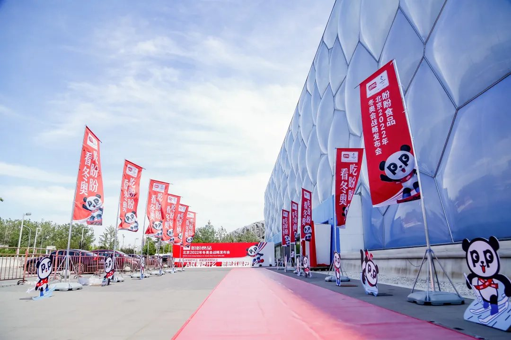

01 · 课题
一次传播机会，不能只形成一次曝光
奥运合作能够带来关注，但品牌真正需要的是在活动结束后仍能被消费者识别、记忆和使用的资产。项目因此把工作重心从单次传播转向品牌角色与包装系统。

02 · 形象
用熊猫建立亲切而统一的品牌角色
熊猫本身具有广泛认知。项目将这一文化资源转化为盼盼食品的品牌形象，使品牌名称、角色与传播内容形成稳定联系。

03 · 包装
让每一件产品都重复同一套识别
新包装把品牌角色、色彩和名称放回真实货架环境中统一检验。不同品类不再各说各话，而是共同积累盼盼食品的整体认知。

04 · 延伸
从单品视觉走向品牌系统
角色不是贴在包装上的装饰，而要能进入产品、传播与日常运营。统一的形象系统让后续传播有了可重复调用的内容基础。